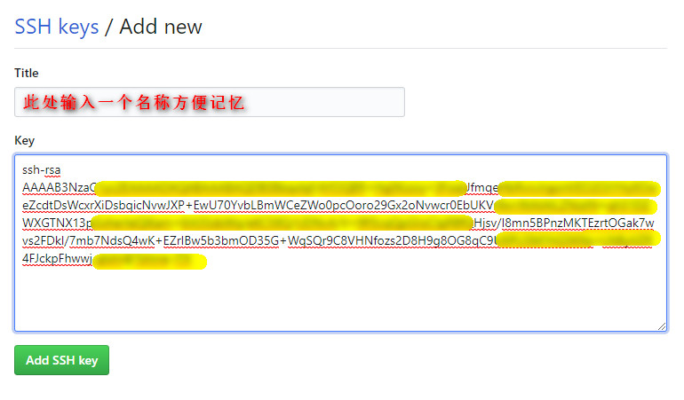

如果经常和远程服务器打交道想必对 SSH 不会陌生，比如 Linux 服务器、Github 等，出于方便管理和安全的考虑，一般会选择使用 SSH Key 的方式进行登录，可以极大的提升认证体验。
生成 SSH KEY
在本地 Linux 终端或Windows CMD运行：
1 | ssh-keygen -t rsa -C "admin@host" |
其中 admin@host 是你的用户名。
一般这时会提示你输入要保存的sshkey的文件名，或直接回车使用默认的名字保存，还会要求输入密码，操作同上。
保存完成后，打开 ~/.ssh 文件夹可以看到id_rsa和id_rsa.pub两个文件。
Windows 用户保存在C:\Users\xxx\.ssh文件夹下。
远程 SSH 配置
上面生成的两个文件，其中 id_rsa 为私钥文件，id_rsa.pub 为公钥，一般配置到远程 SSH 上需要用到的就是公钥，私钥一定要自己保存好，不要泄露。
Linux SSH 配置
这里假设服务器用户名为user，服务器 ip 为 5.5.5.5，准备将公钥文件上传到 /root 目录下，并命名为 client_id_rsa.pub。
将公钥上传到服务器
在本地将公钥上传到目标服务器，这里用的是 scp 命令进行文件传输，也可以通过其他工具上传到服务器。
1 | scp id_rsa.pub user@5.5.5.5:/root/client_id_rsa.pub |
将公钥导入服务器认证库
以下操作在远程目标服务器上执行
创建SSH相关配置（如果该服务器之前使用过SSH key登入或配置过则跳过这步）
1
2
3
4
5mkdir /root/.ssh
touch /root/.ssh/authorized_keys
chmod 700 /rrot/.ssh
chmod 600 /root/.ssh/authorized_keys
service sshd restart将公钥导入
1
cat client_id_rsa.pub >>~/.ssh/authorized_keys
测试
Windows
私钥导入到 Xshell 或 putty 中，新建立一个连接使用 SSH key 的方式认证，进行测试Linux
编辑~/.ssh/config文件，加入1
2
3
4
5
6
7
8
9Host 名称(自己决定，方便输入记忆的)
HostName 主机名
User 登录的用户名
Port 服务器ssh端口号
Host vps2
HostName xxx.xxx.xxx.xxx
User root
Port 22以上保存后，在终端输入
ssh host名称即可链接对应的服务器。比如要链接以上配置中的vps2:1
$ ssh vps2
如果要传输文件可以这样：
1
$ scp vps2:~/test
Github SSH 配置
本地配置
编辑~/.ssh/config文件，加入以下内容，如果没有就新建一个1
2
3
4
5Host github.com
HostName github.com
IdentityFile C:\Users\xxx\.ssh\id_rsa
PreferredAuthentications publickey
User xxx@xxx.com将其中的
xxx@xxx.com修改为你的 Github 用户。远程配置
打开 Github 网站并登录，右上角进入setting，在setting页面左栏找到SSH and GPG keys进入，点击New SSH key。将上面生成的id_rsa.pub用计事本打开，复制里面的内容粘贴到Github页面的 Key 中。如图：
测试
终端输入1
ssh -T xxx@xxx.com
提示如下信息则表示配置成功。
1
2$ ssh -T xxx@xxx.com
Hi XXX! You've successfully authenticated, but GitHub does not provide shell access.
多个 SSH Key 管理
当需要连接多个服务器时，或同时连接 Github 和 Coding.net ，使用的是不同的 SSH key时，就需要对本地 SSH key 进行管理配置。
其实上面的 Github 配置已经用到了相关操作，只要在~/.ssh/config里配置对应的 HostName 和 所使用的 publickey 即可，例如：
1 | Host github.com |
注意这里 Github 和 Coding 使用了不同的key（此处要填私钥），分别为id_rsa和id_rsa_coding，这也意味着上面配置的路径中要存在这两个私钥文件。
如此这般当使用 SSH 连接服务器时就会自动调用对应的配置了。
Linux 用户在终端输入
man ssh_config可以查看关于 config 的使用手册